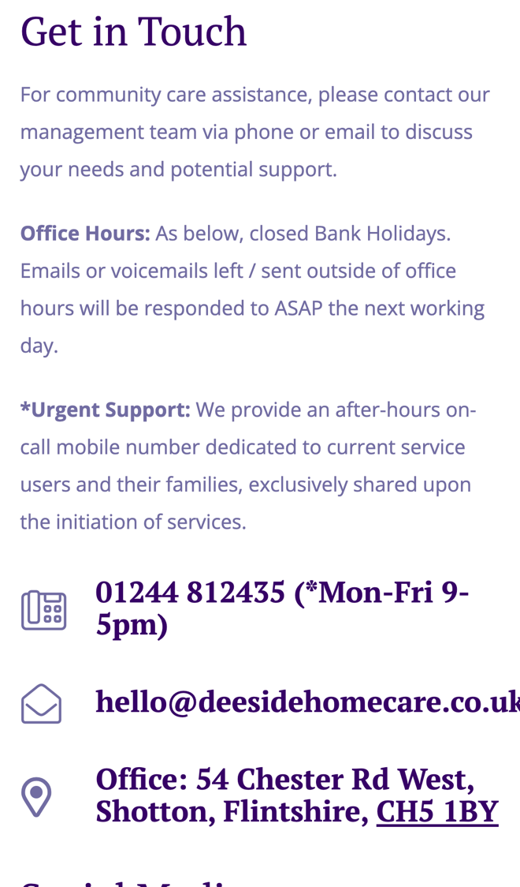
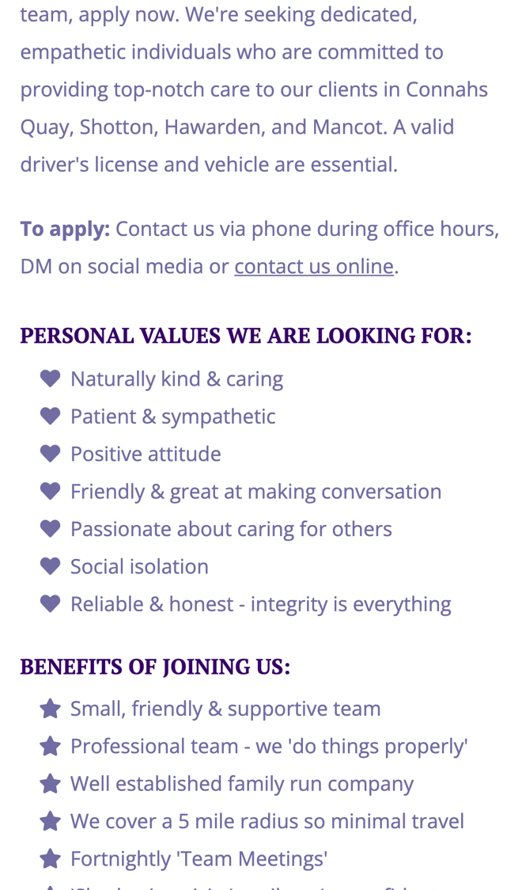

Deeside Home Care: from first enquiry to first visit, faster
I went through your website on a phone, the way a son or daughter looking for care for a parent would, and read your services, service areas, contact page, reviews and careers page. Families' own words on your reviews page say a lot about the care you give. Where I think you'd save time, and help more families, is what happens when someone gets in touch out of hours, and how new carers apply.
What's already working
Three things I'd change
Catch care enquiries after 5pm
Your phone line is "Mon-Fri 9-5pm", and your contact page says "Emails or voicemails left / sent outside of office hours will be responded to ASAP the next working day." Your online form asks for a name, phone, email and a message.

Families often start looking for care in the evening or at a weekend, and as your reviews show, often after a hospital stay. A message that waits until the next working day can mean they've rung someone else first.
- A short form asks what you'd ask on the phone: who the care is for, where they live, what help they need and when it should start.
- It checks the address against your areas and tells the family what happens next and when you'll ring.
- They pick a call-back time in office hours, and you start the day with every enquiry in one list, needs already noted.
Let carers apply in two minutes
Your careers page says "we're expanding our team" and asks for "A valid driver's license and vehicle". To apply, people "Contact us via phone during office hours, DM on social media or contact us online."

Good carers are often working shifts already, so ringing in office hours is hard. Applications by phone, message and email also land in three different places for someone to gather up.
- A short application on your careers page asks the essentials: driving licence and car, areas they can cover, availability and any QCF level.
- Anyone without a licence and car is told kindly straight away, so nobody's time is wasted.
- Suitable applicants pick an interview slot from your calendar, and you see every application in one list.
Ask every family for a review
Your reviews page says "All reviews below and up to date information can be found directly on the homecare.co.uk website", and you're a "HomeCare.co.uk Top 20 Award Winner for 2026".
Your reviews are what new families read before they ring. Asking every family at the right moment keeps new ones coming, without anyone having to remember.
- A few weeks after care starts, the family gets a short, friendly message asking how things are going.
- Happy families get a direct link to leave a review on homecare.co.uk.
- Anyone with a concern is put straight through to you instead, so you hear it first.
Your website, answering for you
An assistant that answers the questions you get asked again and again, at any hour. These answers come only from your own website: your home care services, your service areas and your contact page.
Anything it can't answer, it passes to you with the customer's details.
What happens next
For five local businesses I'm setting up one of these for free, in return for an honest review. Pick whichever would help most.
I'm Tom Williams and I run Tomoni-AI. If a 20-minute chat would help, reply to my email or give me a ring.
Call 07971 512158Email Tom